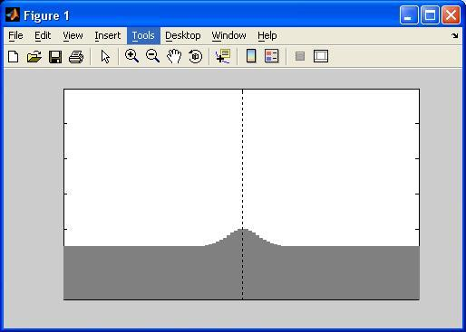
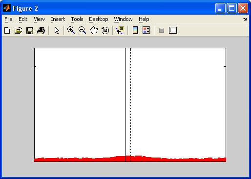
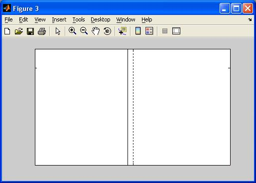
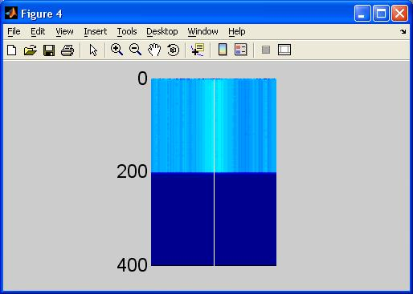

This is the readme for the model associated with the paper Morita K (2008) Possible role of dendritic compartmentalization in the spatial working memory circuit. J Neurosci 28:7699-724 "SWMdend1.m" is a code for a single simulation trial of the circuit model. It can be tested as follows: (as described in the top part of the M-file itself) [stim, x0, out, soas] = SWMdend1([100 100],[0 200 400],... [pi/12 0 1],[pi/12 0 15],1.6,[pi/8 0 24 0.05],[0.1 5 0.1], ... [pi/12 0.3 0.1 0.1],0.05,[]); this creates figures that are similar to Fig 6B, for example:     "simulation_example.m" is a code for systematically running "SWMdend1.m" for a large number of parameter sets. "SWMdend1.m" includes codes for drawing figures, but they would be problematic for a large scale simulation, because there will appear too many figures.